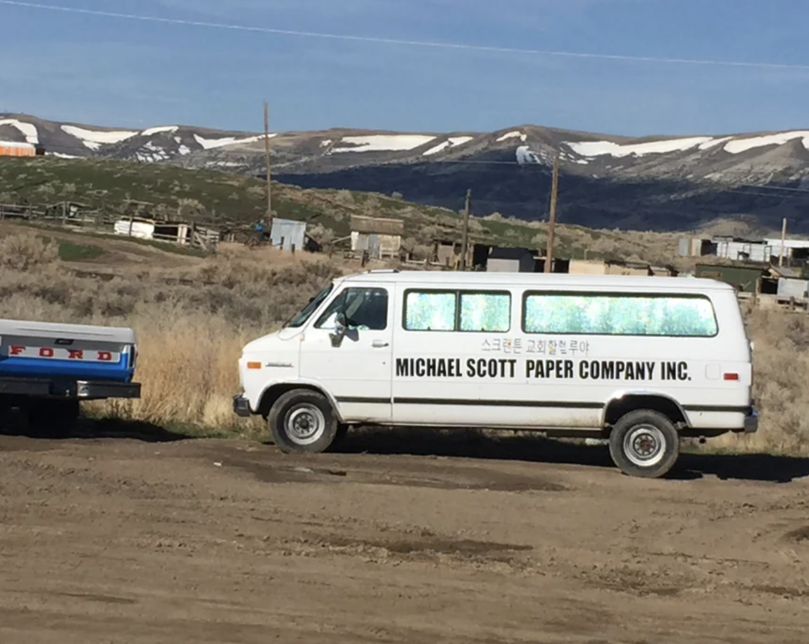
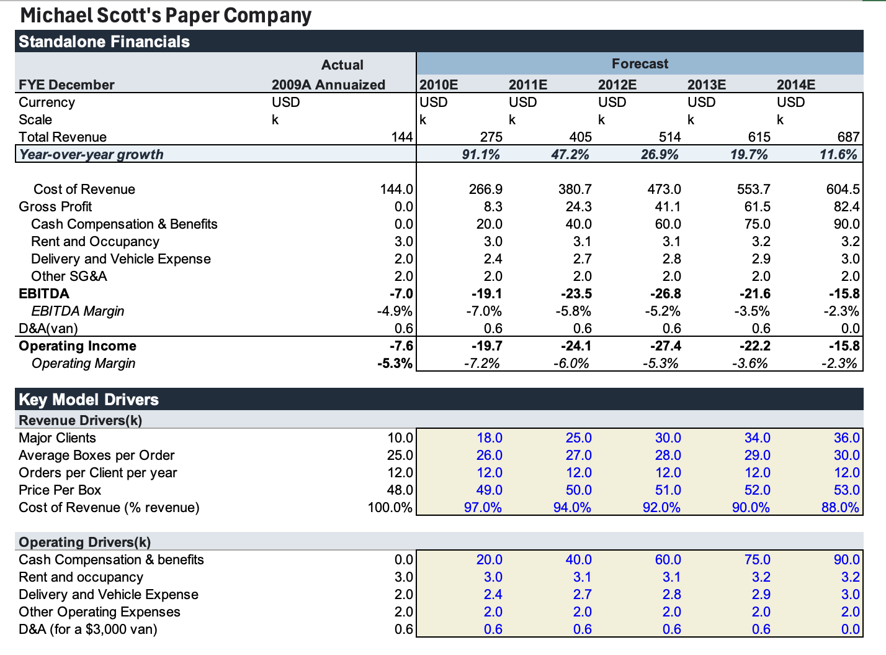
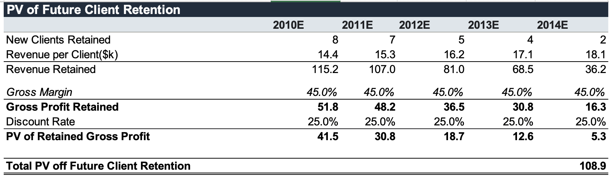
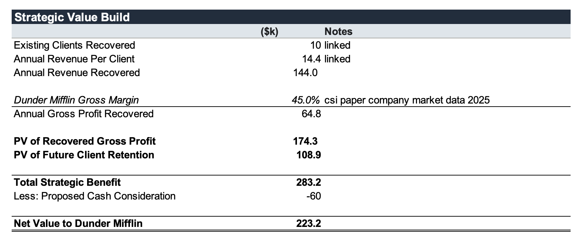

Valuing the Michael Scott Paper Company
The Office is a television sitcom centered around Dunder Mifflin, a regional paper distributor in Scranton, Pennsylvania. After leaving Dunder Mifflin, former regional manager Michael Scott founded a competing paper distributor with Pam Beesly and Ryan Howard. Dunder Mifflin CFO David Wallace initially offered $12,000 for the business and later increased the offer to $60,000. Michael rejected both cash offers and ultimately negotiated for Dunder Mifflin to rehire all three employees with salaries and benefits.

The Michael Scott Paper Company (MSPC) created a meaningful competitive problem despite being financially unsustainable. Within one month, it captured 10 major clients from Dunder Mifflin by offering irrationally low prices. The company also provided free delivery, operated with only three employees, and required Michael, Pam, and Ryan to make deliveries themselves beginning at 5:00 a.m. An outside accountant eventually determined that the company lost additional money with every incremental order and was likely to fail within approximately one month.
I uploaded the entire transcript of The Office to an LLM and asked it to pull out financial information about the company. Michael Scott admitted the company was effectively “worth nothing.” From Dunder Mifflin’s perspective, however, MSPC possessed strategic value because of its customer relationships and the opportunity to eliminate destructive price competition. This analysis will compare its standalone value to its strategic value for Dunder Mifflin. I will project 5 years because it has almost no operating history, making a longer forecast increasingly speculative.
The transcript establishes that the company had 10 major clients, three employees, a 165-square-foot office, free delivery, and a documented order for 20 boxes of paper at $43 per box. Because the show does not disclose complete financial statements, many assumptions are used. Additional anecdotes from Dunder Mifflin’s operations provide context for estimating MSPC’s order volume. Oscar, the accountant, warned that Michael might be unable to pay himself in 5 years upon starting the company. Another key anecdote is Michael delivering 40 boxes to a client in his Dunder Mifflin days.
Disregarding Michael Scott’s managerial style, I will project financials for Michael Scott Paper Company based on anecdotes from the episodes in order to see whether or not Michael Scott Paper Company is, as the creator of the company puts it, “effectively worthless.” In actuality MSPC would almost certainly go bankrupt, but for the purposes of this analysis I’m assuming the best-case scenario.
Here are some other assumptions I made:
- 12 orders per client annually. Monthly orders seem plausible.
- $80,000 for payroll and benefits.
- $3,000 of annual rent, based on 2010 rental rates for small commercial spaces in mid-sized Pennsylvania cities.
- $2k annual vehicle expense.
- Average boxes per order of 25. Michael was previously in charge of the highest-volume accounts, and so 25 seems like a bullish estimate in between Pam’s documented 20 box order and Michael’s 40 box Dunder Mifflin delivery anecdote.
According to CSIMarket data, the average gross margin for paper suppliers is 45 percent. However, Michael Scott Paper Company likely has an abysmal gross margin, given they lose more money as sales increase according to Oscar the accountant. I therefore assume cost of revenue equals 100% of sales in the first forecast year, implying zero gross profit before payroll, rent, and delivery expenses. If Michael can negotiate lower supplier costs, use his salesmanship to sell higher-margin products, and increase order density, the cost of revenue could start to improve. The van he uses is… not great. I work it into the model, valuing it at $3k. If we assume that it fully depreciates over the 5-year period, that leads to 0.6k in D&A from the van per year.

EBITDA never becomes positive during my five-year hypothetical forecast. Given my optimistic assumptions, it is very safe to say Michael Scott Paper Company has zero standalone value, and is only valuable to Dunder Mifflin from a strategic perspective. This was not unexpected at all.


Given earlier estimates, I assume Dunder Mifflin operates at a 45% gross margin. In a potential acquisition of the Michael Scott Paper Company, Dunder Mifflin could recover approximately $64.8k of annual gross profit from MSPC’s 10 existing clients alone. Because Michael’s stated strategy is to win Dunder Mifflin’s own accounts through aggressive price undercutting, I assume a further 26 clients are at risk, not 36, since MSPC grows from 10 total clients to 36. Discounting the gross profit associated with both the recovered clients and the avoided future client losses at 20% produces total strategic benefits of approximately $283.2k. After subtracting Wallace’s proposed $60k cash consideration, the implied net strategic value is approximately $223.2k. Keep in mind this is the MSPC upside case.
The acquisition therefore appears economically attractive under the upside case, as the estimated strategic benefit exceeds the proposed cash consideration. However, much of that value depends on MSPC surviving long enough to continue taking Dunder Mifflin accounts. Please note that this analysis is satirical; for fans of the show, whether MSPC could survive long enough without Michael Scott burning his foot on another George Foreman grill remains unclear.